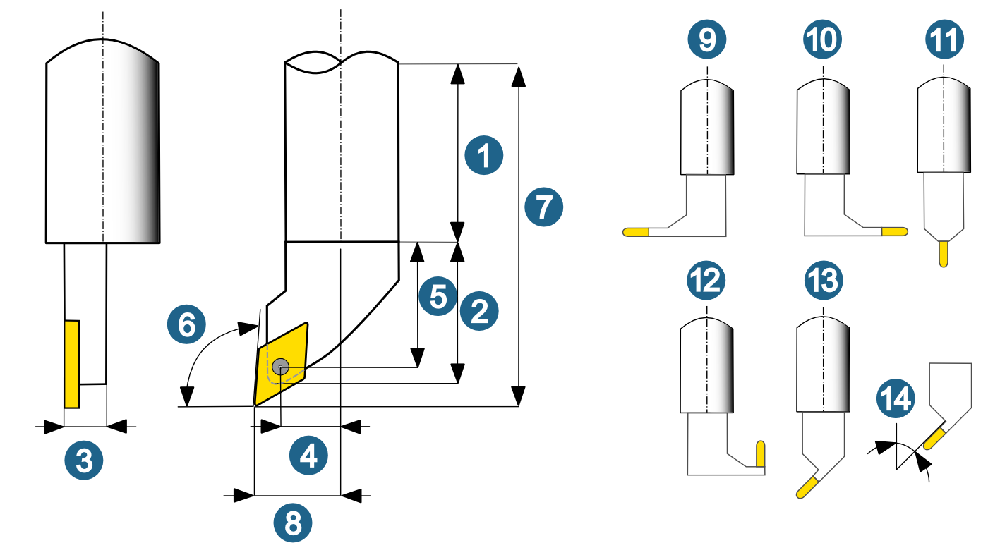
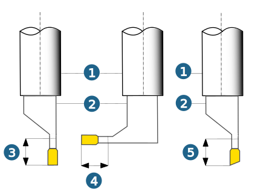

Turning tool
The following turning tools are available in the tool database:
(1) Turning tool, (2) Recessing tool, (3) Axial recessing tool, (4) Parting tool, (5) Threading tool.
General geometry parameters
(1) Shank geometry, (2) Extruded geometry, (3) Extrusion thickness, (4) Axis distance, (5) Shank distance, (6) Approach angle, (7) Setting length X (8) Setting length Z (9) Mounting direction left, (10) Right, (11) Top, (12) Inverse, (13) Angle, (14) Mounting direction angle.
|  |
Note
The Axis distance (4) and Shank distance (5) geometry parameters in the graphical preview are with reference to the insert lying flat in the Z-X plane and not to the actual tilted view. Toolpath calculations are also with reference to a cutting point, which is calculated in this view.
Geometry parameters: recessing tool, axial recessing tool, parting tool.
(1) Shank geometry, (2) Extruded geometry, (3) Maximal radial depth, (4) Maximal axial depth, (5) Maximal cutting depth.
The largest radial / axial depth and the maximum depth of cut relate to the groove or recess to be machined. The value may be greater than the length of the insert.
|  |
Geometry parameters threading tool
(1) Reversed not activated, (2) Reversed activated
 |